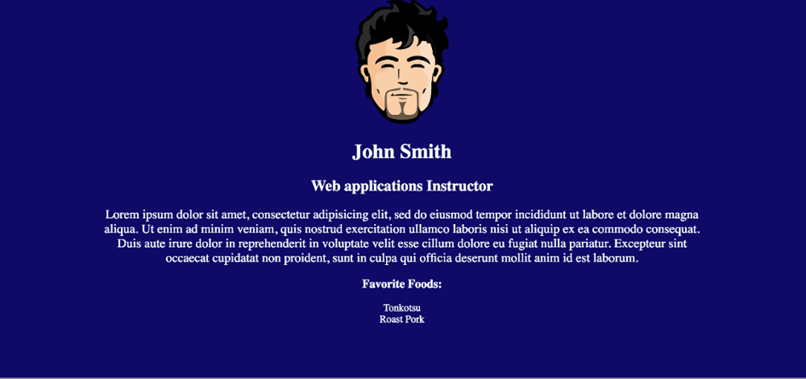

In this exercise, we will be continuing the ProfileProject exercise from the HTML module.
You will take the simple website you’ve created and add CSS to give your page some style.
The purpose of this exercise is to take an existing HTML file and link an external CSS sheet as well as give you a first-time experience styling a webpage in a project.

ProfileRemake.css directory.css directory, create a styles.css file.ProfileProject from the HTML module.index.html file from ProfileProject to ProfileRemake.ProfileProject exercise from the HTML module.index.html file in Sublime Text and the browser.styles.css file.color, background-color, and text-align properties.height and width to a desired size.width to 3 quarters of the page.margin to 0 auto.li tags and remove the bullets for the list items.